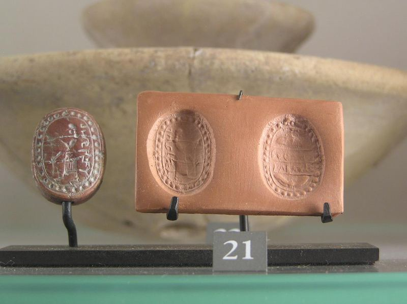
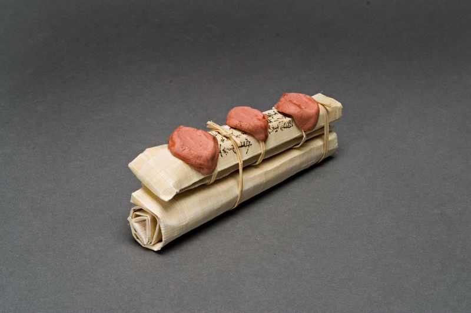

At the beginning of chapter 10, Moroni addressed the Lamanites, his former enemies. He wanted to warn and urge them to be righteous. Moroni used the word “exhort” eight times as he warned and taught. While there can be many powerful dimensions in the meanings of the word “exhort,” Moroni was careful to not be overly zealous, which could turn the Lamanites and readers away from his teachings. He also did not use here the more pointed questioning and challenging verbal registers that he had used earlier in Mormon 8–9.
How might we speak like Moroni and avoid offending people and prevent our teachings from being rejected? How can we avoid going too far with “exhortations”? From Moroni, notice that in verses 18 and 19, he twice added the words “my beloved brethren” into his exhortation. These words were used a dozen times by Mormon in his three letters which Moroni treasured. As missionaries exhort people to come unto Christ, love and understanding make that invitation more pleasant. If a person understands that the missionaries teaching them actually care and have concern for them, their words carry a stronger message without sharpness.
Usually, when people talk about sealing something, they are thinking of licking and sealing an envelope. Perhaps Moroni’s closing up the stone box would have been considered a kind of sealing, but the phrase “to seal” has a lot more to do with authority than closure. When people are sealed in the temple, it does not mean they are glued together forever; rather, they are authenticated as part of the eternal family.
In the ancient world, court or state officials often had a unique seal, which may have been a little cylinder seal or a signet ring that left an impression when rolled onto clay or wax.
When a seal of approval was placed on something, it became official. Jewish law required three witnesses to sign and put their seal on a lump of clay that was then attached to the document. This was necessary in order for a document to be legally binding. Only a judge could break the seal and if the seal was otherwise broken, the integrity of the document was compromised. A broken seal indicated someone may have tampered with the contents. Without sealing a document, someone could rub a character out of a metal plate and scratch in a new one, changing the original intent of the document.
Two Roman brass plates from AD 109, which we acquired in 2005, were witnessed in this ancient manner and now reside in the BYU Special Collections Library. They are an official decree of the Roman Emperor Trajan granting citizenship to a retiring Roman soldier who had fought for 25 years in the Roman Army. This doubled, sealed, witnessed document served as the soldier’s retirement passport, giving him Roman citizenship and privileges

as a retiree. Fragments of such plates are found all over the old Roman Empire. However, there are less than twenty such sets of two plates—and one of them is archived at BYU.
These ancient sealed Roman plates are interesting because they are composed of two bronze plates connected by a ring so that they open like a book. The full text is written on the outside (equivalent to the front cover) and then the same text is replicated on the inside. On the back are listed the official names of seven witnesses, as required by Roman law. These witnesses are officials of the Roman Empire. All such documents have not only the names of seven Roman officials, but also the personal seals of these seven witnesses.
When the Book of Revelation chapter 5 talks about John seeing a book that was written on the inside and on the outside, sealed with seven seals, and given to the judge who can then break the seal, he may well have been using this standard kind of authentication of documents. A similar mode of authenticating a real estate deed is found in Jeremiah 32.
This authentication method is evident in Hebrew, in Greek, and in Latin. It was used in Mesopotamia for over 2000 years before the time of Christ. There are numerous ancient legal documents authenticated this way.
Figure 1 Pre-exilic Hebrew royal seal, in the Louvre Museum, Paris. Photo by John W. Welch

Figure 2 Model of typical Hebrew papyrus legal document from Elephantine, Egypt, showing the names and seals of the required three witnesses. From the BYU Studies and FARMS exhibition of Two Doubled, Sealed, Roman Metal Plates, currently in the library of the LDS Putting on the official binder with the seal of the witnesses would have been an important part of closing up an official document in Moroni’s mind. This was standard operating procedure for any legal documentation in the ancient world.
In addition, Moroni knew Isaiah’s prophecy about “a book that is sealed” (Isaiah 29:11) that would come forth “out from the dust” (Isaiah 29:4), as it was quoted by Nephi in 2 Nephi 27:7–9. No doubt Moroni had Isaiah 29 in mind when he finally sealed up the final record.
Moroni organized his final message by giving a series of exhortations. He used a form of the word “exhort” nine times in this chapter—first, as he introduced this section and then eight more times as he gave eight specific exhortations. This word sets the main tone that runs throughout this final chapter. Moroni had exhorted his readers in similar ways earlier in Mormon 8 and 9. However, in his final words in Moroni 10, something gentler and more compassionate is now found, even though his message is still very intense and urgent. Here, Moroni took time to offer more explanation and instruction together with each of his exhortations.
In Greek, the origin of the word “exhort” is related to swearing an oath and “to encourage extremely or strongly.” In English, it means “to encourage, entreat, persuade, preach, urge, and warn.” Moroni knew that this was his last chance to communicate with his readers. He said, in effect, “Do not procrastinate and set this message aside,” and he said repeatedly, “I would exhort you … I would exhort you.”
In verse 3, Moroni’s first exhortation was, “I would exhort you that when ye shall read these things, if it be wisdom in God that ye should read them, that ye would remember how merciful the Lord hath been unto the children of men.” The theme of remembering how merciful the Lord has been is threaded throughout the entire Book of Mormon. For example, Alma, Benjamin, and Jacob all addressed this topic. Because it is such a strong theme throughout the Book of Mormon, the words “mercy,” “mercies,” or “merciful” appear in the book very frequently: “Mercy” appears 85 times; “mercies,” especially tender mercies, 18 times; and merciful appears 47 times. That is a lot of use for any content- rich word in the Book of Mormon.
Putting on a special lens to watch for a particular topic, such as “God’s mercy,” is an effective way to study the Book of Mormon. Searching for instances in the Book of Mormon where the word “mercy” is mentioned explicitly or linked through a story about a merciful aspect of God, will reveal a great deal about the mercy of God and will demonstrate how, why, and when God’s mercy works. Studying the scriptures by subject or topic is a very effective method of delving deeply into gospel doctrine. Are there any better places to learn about God’s mercy than by studying the Book of Mormon?
In fact, the first chapter of the entire Book of Mormon launches the theme of the Lord’s mercy as a key concept that runs throughout this record, making it all the more appropriate that Moroni ends with that theme as well. In 1 Nephi 1:1, while not specifically using the word “merciful,” Nephi introduced this concept by stating that he had seen many afflictions, “nevertheless, having been highly favored of the Lord in all my days; yea, having had a great knowledge of the goodness and mysteries of God …”
Referring implicitly to God’s mercy, Nephi assures us as his readers that the Lord visits, helps, reassures, blesses, and reveals his will to people.
A few verses later, in 1 Nephi 1:14, Lehi made the following observation, after receiving his vision of the destruction of Jerusalem: Great and marvelous are thy works, O Lord God Almighty! Thy throne is high in the heavens, and thy power, and goodness, and mercy are over all the inhabitants of the earth; and, because thou art merciful, thou wilt not suffer those who come unto thee that they shall perish.”
What did Lehi consider merciful about the destruction of Jerusalem? Lehi understood that there would be an opportunity for repentance for any person who chose to come back to the Lord—the Lord will save any who come to Him. Part of the mercy is that God always points out the mistakes for which people can repent. How would they know what they needed to correct if there were no schoolmaster; if they had no one loving enough to say, “If you keep going down this path, it is not going to work out”? Warning is an act of mercy.
Six verses later, in 1 Nephi 1:20, responding to the Jews’ treatment of his father, Nephi adopted this theme as one of the main purposes for his writing: “But behold, I, Nephi, will show unto you that the tender mercies of the Lord are over all those whom he hath chosen, because of their faith, to make them mighty even unto the power of deliverance.”
Indeed, the mercy of the Lord extends throughout all time and to all people. In Jacob 4:10, Jacob recorded, “For behold, ye yourselves know that he counseleth in wisdom, and in justice, and in great mercy, over all his works.”
When discussing the great plan of God that includes the Atonement, Alma referred to the entire plan as the “Plan of Mercy.” In his words to his son Corianton, in Alma 42:15, Alma explained: And now, the plan of mercy could not be brought about except an atonement should be made; therefore God himself atoneth for the sins of the world, to bring about the plan of mercy, to appease the demands of justice, that God might be a perfect, just God, and a merciful God also.
God’s “Eternal Plan,” when viewed from different perspectives is variously called the “Plan of Happiness,” the “Plan of Salvation,” or in the Book of Mormon, the “Plan of Redemption.” God’s mercy is a prime focus, no matter which name is used for God’s plan.
Therefore, the mercy of God is demonstrated and presented throughout the whole Book of Mormon.
And why is it important for people to remember how merciful God has been from the time of Adam until now? If a person gratefully remembers the mercy and the love of God, instead of demanding God’s attention or being afraid of God’s condemnation, the attitude of appreciation softens the heart, making one more receptive to God’s Spirit, God’s word, and God's personal revelation. Knowing that God has been merciful in the past gives people confidence that He will be generous and openhanded again. We can learn something important, and often overlooked, from Moroni’s approach. If you want to encourage righteousness, begin by remembering the mercy of God.
In the context of attesting, testifying, exhorting, and warning in Moroni 10, Moroni uses the word deny exactly seven times.
He first uses the word deny three times in three verses in addressing his future Lamanite readers, and anyone else who might be listening in.
1. He declares that “nothing that is good denieth the Christ” but rather that which is good acknowledgeth that he is (10:6). And then he then exhorts these people: 2. to “deny not the power of God” (10:7) and 3. to “deny not the gifts of God, … [which] are given by the manifestations of the Spirit of God unto men, to profit them” (10:8).
First and second, people must not deny Christ or the power of God. Third, people must not deny the panoply of the many gifts of God. It is important to recognize that these gifts are manifested in many ways. God, after all, is a God of fullness and abundance.
There are thus many gifts of the Spirit, some of which Moroni listed in verses 8–17. It is interesting, but not coincidental, that the Bible, Book of Mormon, and Doctrine and Covenants all contain sections explaining gifts of the Spirit. The prophet Moroni, the apostle Paul, and the prophet Joseph Smith list these gifts, respectively, in Moroni 10, 1 Corinthians 12, and D&C 46. Obviously, this multiplicity indicates the importance of this topic in order for us to gain and maintain a testimony of Jesus Christ and his gospel.
Where else in the world can one go to receive a patriarchal blessing to help recognize and embrace the spiritual blessings God has particularly afforded to us individually?
As readers reach the end of the Book of Mormon, some may have already received a witness of the truthfulness of the record but perhaps may not have recognized it for what it was.
Others might be seeking a specific type of spiritual manifestation and yet overlooked how the Spirit works through a number of different manifestations. Those who carefully read the context of Moroni’s promise will more fully understand the wide variety of spiritual manifestations that are given for our benefit. The abundance of these gifts helps us to “deny not the power of God” and to “deny not the gifts of God” (Moroni 10:7–8).
It is probable that Moroni’s teaching about spiritual gifts was triggered by what he himself had learned as he worked on the Nephite record. As he abridged the text of the Book of Mormon, Moroni was undoubtedly touched by the many narratives of faithful people who were blessed with and by gifts of the Spirit. For example, he likely recognized that Nephi, the people of Ammon, and many others had the gift of exceeding great faith. He was familiar with narratives of people who “beheld angels and ministering spirits”— including Nephi and his brothers, Alma the Younger and his companions, the people and their children upon Christ’s appearance in Bountiful, and many others. Moroni was intimately familiar with the plates which were full of accounts of people who saw, experienced, and worked “mighty miracles.”
Moroni, himself, was blessed with many gifts of the Spirit throughout his lifetime. These things were part of his personal testimony and experience. The Lord blessed Moroni with the gift of “tongues and interpretation of languages” as he worked on the plates in general.
He relied on these gifts as he abridged the Jaredite records. Undoubtedly, Moroni recognized and knew that King Mosiah also had these same gifts.
Spiritual gifts are necessary and present in all dispensations of the gospel. Moroni received personal revelation about the Nephite record coming forth in a future day by the gift and power of God. He understood that special spiritual gifts would be necessary for interpreting and translating the record. In addition, Moroni knew that his work would go to the Lamanites, Gentiles, and Jews—people of many languages. Spiritual gifts are indispensable in providing and increasing faith in Jesus Christ and for communicating the word of the Lord and bringing it into the hearts of people everywhere.
Moroni’s four other uses of “deny” occur near the end of chapter 10, in verses 32 and 33 (see below).
Further Reading Book of Mormon Central, “How did the Book of Mormon Help the Early Saints Understand Spiritual Gifts? (Moroni 10:8),” KnoWhy 299 (April 12, 2017).
Book of Mormon Central, “How Will God Manifest the Truth of the Book of Mormon? (Moroni 10:4),” KnoWhy 254 (December 16, 2016).
Moroni 10:17 — Gifts of the Spirit Come unto Every Man Severally Verse 17 states that “all these gifts come by the Spirit of Christ; and they come unto every man severally, according as he will.” It is not a gift from God if we somehow create these things by ourselves. It is a spiritual gift when it is given by Christ and by God’s will.
What does the word “severally” mean? The phrase “joint and several liability” is familiar legal terminology. People who are “jointly liable” can be sued as a group and, if any one person in the group is found to be in the wrong, each person would pay an equal amount due the victim or plaintiff. However, if the liability is several, then each one of them can be sued individually without involving the entire group or whole partnership.
“Severally” is an old way of saying “individually.” “Collectively” or “individually” means the same as “jointly” or “severally.”
For instance, in the Parable of the Talents, before traveling into a far country, a man called his servants together and gave one of his servants one talent, two to another, and five to another— “to every man according to his several ability” (Matthew 25:15).
Moroni was saying that the spiritual gifts are given severally —individually— because God knows who we are. He knows what we can do, what we should do, and what he would like us to have the opportunity to do. It is useless to envy the gifts of others.
Moroni’s writings in these verses contain a sequence that illustrates the rising effect of faith, hope, and charity that leads, in steps, to positive eternal consequences. This upwardly rising list is followed by an equivalent downward spiral that transpires if one does not have faith—a spiral that leads to despair because of iniquity. Moroni does not go into detail as he mentions the necessity of having faith, hope, and charity, probably because he has already included his father’s lengthy discourse on this grand trilogy in Moroni 7.
But Moroni does add an important summation of the necessary co-existence of these three (in verse 20), and then states (in the opposite order) the necessary requirement of having charity, hope, and faith (verses 21, 22, and 23). He stresses that these three are both necessary and sufficient. One can be “saved in the kingdom of God” if and only if one has all three.
And he also quotes, as his father had done, a saying of Jesus that we don’t otherwise have.
Mormon had quoted this saying as follows, “And Christ hath said: If ye will have faith in me ye shall have power to do whatsoever thing is expedient in me” (Moroni 7:33). Moroni then intensified that saying to read: “And Christ truly said unto our fathers: If ye have faith ye can do all things which are expedient unto me” (10:23).
Initially, Moroni’s message in chapter 10 was directed to the Lamanites (verses 1–23).
However, in verse 24, Moroni turned his attention to “all the ends of the earth.”
Expounding further on the gifts of God, he warned that if the gifts of God were to be “done away,” it would be because of unbelief, and unrighteousness. This is followed by his seventh exhortation in verse 27. Speaking still to the entire world, he explained why we must remember: … for the time speedily cometh that ye shall know that I lie not, for ye shall see me at the bar of God; and the Lord God will say unto you: Did I not declare my words unto you, which were written by this man, like as one crying from the dead, yea, even as one speaking out of the dust?
Among his exhortations in chapter 10, Moroni encouraged his readers to “remember” four times. The theme of “remembering” permeates the Book of Mormon. The first three of Moroni’s appeals to remember were directed at the reader to remember a particular good, loving, or divine trait of the Father and Christ—including the advice to remember that they will not change (verses 3, 18, and 19). The fourth was an injunction to remember what Moroni had said—to act, obey, and accept Christ.
Both “remember” and “forget” are words through which one may gainfully study the whole Book of Mormon. These two words are used repeatedly throughout the record. King Benjamin said, “And now, O man, remember, and perish not” (Mosiah 4:30). There is more to remembering than just being able to memorize something, like a multiplication table.
“Remembering” in the sense of memorizing something may be helpful with certain points of the gospel, but there is more to remembering than just recalling memorized material.
Moroni does not direct us to “memorize” or “recall.” He exhorts us to “remember.”
The Hebrew word behind “remember” is the word for “obey.” When you really remember something, you obey it. How many mothers have said, “Remember what I said?” Mothers were not asking, “Can you repeat back to me what I said.” They were asking, “Why did you not do it?” The same meaning accompanies the Hebrew understanding of the word “hear.” “Hear, O Israel!” does not just mean to listen and let it go in one ear and out the other. There is an element of obeying when you really “hear” and “remember.”
Sister Julie Beck, who served as Relief Society General President, gave a talk at General Conference that explained the process of “remembering.” The word “member” means “a part of something.” To “re-member” means “to put the parts back together.” A memory of one particular experience with the Spirit may be vague. However, by consciously putting together one memory after another—adding each spiritual experience one piece at a time—you recognize the validity and strength of God’s dealings in your life. This process builds and strengthens testimony. That is remembering in a very active way. This is what Moroni wanted us to do when he exhorted us to remember. He was not asking us to memorize or make a list. He was asking us to recall and then to put back together and feel again what we experienced every time a good gift came to us. He was giving us a recipe for building, strengthening, and maintaining our testimony of Jesus Christ.
Moroni was not the first to warn, “touch not the unclean thing.” This was a quotation from Isaiah 52:11 where he stated, “Depart ye, depart ye, go ye out from thence, touch no unclean thing; go ye out of the midst of her; be ye clean, that bear the vessels of the Lord.” This phrase was used in Alma 5:57: “Be ye separate, and touch not their unclean things.” Jesus quoted Isaiah almost verbatim at Bountiful in 3 Nephi 20:41. Moroni, then, was not the first to touch on the theme, “do not touch the unclean thing.” There is plenty of material throughout the Book of Mormon for a study of that theme. In his summary, Moroni was teaching principles that had been demonstrated and taught throughout the record.
In verse 31, Moroni followed that quotation by stating, “awake and arise from the dust, O Jerusalem,” quoting from Isaiah 52:1–2. Moroni continued with “and put on thy beautiful garments, O daughter of Zion; and strengthen thy stakes and enlarge thy borders forever.”
He blended three passages from Isaiah 52 and Isaiah 54, all of which Jesus had quoted in 3 Nephi chapters 20 and 22. Moroni was echoing the words of Jesus as he invited us to come unto Jesus. He was pulling his teachings from the strong themes of the Savior and the earlier prophets.
In addition to incorporating these important concepts in this powerful conclusion in verse 31, Moroni also included phrases from Isaiah and 3 Nephi in the Title Page, which was the last thing written by Moroni. The Title Page is included as the first page in modern versions of the Book of Mormon, even though it was probably the last of Moroni’s writings. It mentions the Lord’s confounding the language of the people of Jared and gives reassurance that the House of Israel “are not cast off forever.” The “covenants of the Lord” are also mentioned on the title page. In Moroni’s summary in verse 31, he reassures the reader that people will “no more be confounded” and that “the covenants of the Eternal Father which he hath made unto thee, O House of Israel, may be fulfilled.” In other words, the House of Israel will not be cast off forever.
Moroni 10:30–32 — Come unto Christ and Be Perfected by His Grace
Four final exhortations to “deny not” are all included in verses 32 and 33. After having expanded his range of audience to include people in “all the ends of the earth” (10:24), Moroni goes on to exhort everyone to “come unto Christ and lay hold upon every good gift.” He then places the next two “denys” at the center of a small inverted parallelism or chiasm in 10:32: 4. “Come unto [1] Christ, and [2] be perfected in him, and [3] deny yourselves of all ungodliness; 5. and if ye shall [3] deny yourselves of all ungodliness, and love God with all your might, minds, and strength, then is his grace sufficient for you, that by his grace ye may [2] be perfect in [1] Christ.”
And then in 10:32–33, he doubly intensifies his final point, with a direct parallelism: 6. “And if [4] by the grace of God ye are [5] perfect in [6] Christ, ye can in nowise [7] deny the power of God” (10:32).
7. “And again, if [4] ye by the grace of God are [5] perfect in [6] Christ, and [7] deny not his power, then are ye sanctified in Christ” (10:33).
Having completed his seven-fold emphasis on the word “deny,” Moroni signals to all readers that everyone should make special efforts to avoid ever wrongly denying the manifestations of God’s spirit unto us.
Obviously, the exhortation to “deny not” occupies a profoundly central place here in Moroni 10, as it has throughout the Book of Mormon. It was a key concern for Mormon as well as for Moroni. The word deny (denied, denieth, or denying) is used 83 times in the Book of Mormon, more than twice as often as it is found in the Bible.
In trying to unpack fully why Moroni chose to end his writings with this particular set of instructions and warnings regarding “denying,” it helps to make use of a full set of analytic tools. For example, here are some reflections in this regard that I find most intriguing and beneficial.
The scriptures teach that no unclean thing may enter into the presence of God, but Moroni commented on an additional benefit of becoming perfected in Christ: [I]f ye by the grace of God are perfect in Christ, and deny not his power, then ye are sanctified in Christ by the grace of God, through the shedding of the blood of Christ, which is in the covenant of the Father unto the remission of your sins, that ye may become holy, without spot.
What an invitation! What a wonderful, enabling instruction on how to receive the grace of Christ—be perfected in him, made holy, and without spot; all of which will qualify us to abide in his holy presence.
One can truly enjoy the spirit of Moroni’s distillation of everything that he was trying to convey. It is inspiring to observe how the principles that we encounter at the end of the Book of Mormon have been taught throughout the record, how the way had been prepared, and how the groundwork had been laid all along so that Moroni could tie it together for a meaningful conclusion. There is hardly a single verse in the whole Book of Mormon that is not somehow directed at channeling the reader to these concluding points.
It is a brilliantly superb summation of the entire Book of Mormon and, in and of itself, it is a truly remarkable, communicative conclusion and composition.
Moroni’s thoughts completely turned to Jesus Christ and to the Father as he was putting the final stamp of divine imprimatur and validity upon the record.
The name “Jehovah” only appears one time in the whole Book of Mormon, except for places where it is in a quotation from Isaiah or some other ancient prophet. Why is that the case? Why would Moroni wait to the very end and say, “Until ... I am brought forth triumphant through the air, to meet you before the pleasing bar of the great Jehovah, the Eternal Judge of both quick and dead”?
One possibility for using the name “Jehovah” very sparingly is that the name of Jehovah was extremely sacred to the ancient Israelites. In attempts to carefully observe the commandment not to take God’s name in vain, they did not speak openly using the name of God, considering his name to be very sacred. This is one reason why there was confusion among the Jews and others about who Jesus was, who Jehovah was, who Elohim was, and who God the Father was.
Every year, on the Day of Atonement, the High Priest had the name of Jehovah (YHWH - “Yaweh”) written on his forehead. On this day, as the High Priest performed the atoning sacrifices, he was acting in the place of the Savior, who would perform the real eternal atonement. Under the Law of Moses, so sacred was the name “Jehovah,” it could only be pronounced out loud on the Day of Atonement. Otherwise, when the Israelites spoke of Jehovah, they would use a euphemism of some kind in place of using the name “Jehovah”—using the title “Lord,” among others.
In King Benjamin’s Speech, the phrase “Lord God” is mentioned ten times. “Ten” was considered the number of perfection. King Benjamin said the name or title of God a perfect number of times. A High Priest could mention God’s name on the Day of Atonement, but he had to mention it out loud in the prayers a perfect number of times. The name “Jehovah” appears in the Dead Sea Scrolls in a few places. Where the name “Jehovah” does appear, the ancient Hebrew scribes would not spell out the four letters of the name in Hebrew (JHWH). Instead, they put four dots to remind people that they should not say the sacred name out loud.
When Moroni got to the very end of the Nephite record, he put the very sacred name “Jehovah” as the final punctuation mark on his text, sealing it with the name of God. The sacred name written in the Nephite record made the record itself sacred. Moroni felt that he could safely and respectfully write the name of Jehovah because he then buried the record in the ground so no unauthorized person or natural event would damage it. There would be no risk of someone reading the holy name of Jehovah and misusing it until God brought the record forth. This indicated the reverence that Moroni had for Jesus Christ and for his name, Jehovah.